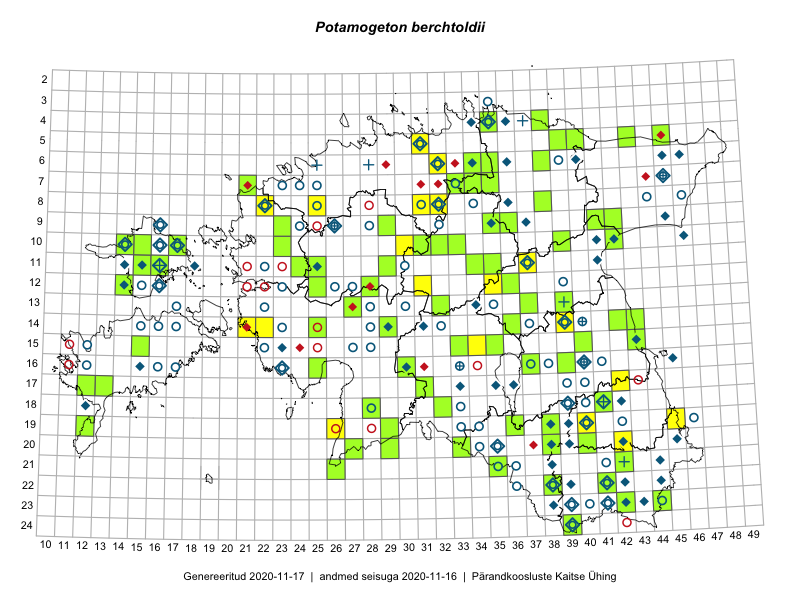

Potamogeton berchtoldii
Uuendatud: 2016-12-01
Kaardile koondatud taksonid: Potamogeton berchtoldii Fieber

Kaart põhineb 8 kirjel.
Viited andmebaasikirjetele
- Tõnu Feldmann, Katrit Karus: 2015-07-27: 19-45: ala
- Katrit Karus, Tõnu Feldmann: 2015-08-04: 05-31: ala
- Maria Abakumova, Helle Mäemets: 2015-07-30: 15-34: ala
- Eeva-Maria Jeletsky, Tarmo Niitla: 2015-07-25: 24-39: ala
- Erkki Otsman, Sergei Smirnov: 2015-07-21: 14-39: ala
- Kirsi Loide, Marje Loide: 2015-07-27: 17-42: ala
- Kadi Palmik, Helle Mäemets: 2015-07-21: 09-35: ala
- Hanna-Eliisa Luts, Tõnu Ploompuu: 2015-07-28: 11-25: ala